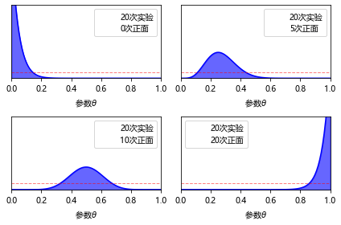
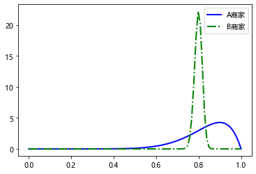
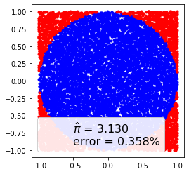
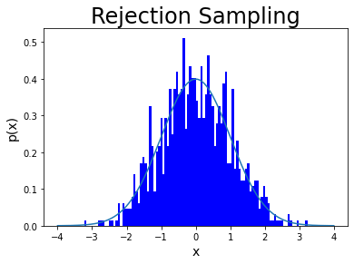
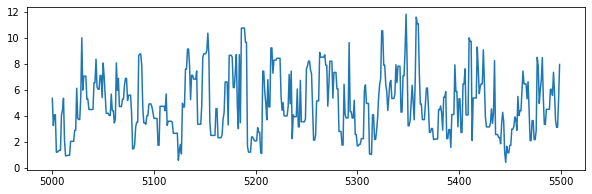
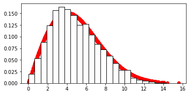

Python-人工智能数学基础 17
17 贝叶斯分析
17.1 贝叶斯分析概述
17.1.2 贝叶斯学派与经典统计学派的争论
统计推断是根据样本信息对总体分布或总体的特征数进行推断，事实上，这经典学派对统计推断的规定，这里的统计推断使用到两种信息：总体信息和样本信息；而贝叶斯学派认为，除了上述两种信息以外，统计推断还应该使用第三种信息：先验信息。
统计学派
-
观察到的数据被认为是随机的, 因为它们是随机过程的实现, 因此每次观察系统时都会发生变化.
-
模型参数被认为是固定的, 参数的值是未知的, 但它们是固定的, 因此我们对它们进行条件设置.
贝叶斯学派
-
数据被认为是固定的, 它们使用的是随机的, 但是一旦它们被拿到手了, 就不会改变.
-
贝叶斯用概率分布来描述模型参数的不确定性, 这样一来, 它们就是随机的.
17.1.3 贝叶斯公式
- 公式:
- 估计(离散型):
- 估计(连续型):
17.1.4 贝叶斯解释
1 先验信息和先验分布
指抽样之前对所研究的问题的认识, 记为
2 后验分布
一旦获得抽样信息后, 人们对参数的认识就发生了改变, 调整后会获得对的新认识, 称为后验概率, 记为
3 共轭先验分布
先验分布的选择具有主观性, 一般选择无信息先验分布和共轭先验分布
假如由样本信息得到的后验分布概率和先验密度函数属于相同的分布类型, 则称是参数的共轭先验分布
例 17.2 (共轭先验的例子 Beta-伯努利分布)
设事件发生的次数为, 发生的概率为, 为了估计而做次独立事件
显然(二项分布), 得到似然函数:
假设先验分布为均匀分布, 即(概率分布函数为 1),
由贝叶斯公式求后验概率分布:
上式是参数为和的贝塔分布, 记为
如抛硬币 10 次, 5 次正 5 次反, 那么后验概率就是, 贝塔分布的均值就是 0.5 (的数学期望)
例 17.3
分别进行 4 次抛硬币实验, 每次抛 20 下, 抛出正面的次数分别是 0, 5, 10, 20 次, 观察不同的样本信息对先验分布的调整. 先验分布选择(扔了 0 次 0 次正面?)
import matplotlib.pyplot as plt
import scipy.stats as stats
import numpy as np
plt.rcParams['font.sans-serif'] = ['Microsoft YaHei']
plt.rcParams['axes.unicode_minus'] = False
theta_real = 1
# 分别进行 4 次抛硬币实验, 每次抛 20 下, 抛出正面的次数分别是 0, 5, 10, 20 次
trials = [20, 20, 20, 20]
data = [0, 5, 10, 20]
beta_params = [(1, 1)]
dist = stats.beta # dist 设为 Beta 分布
x = np.linspace(0, 1, 100)
# enumerate() 函数用于将一个可遍历的数据对象(如列表、元组或字符串)组合为一个索引序列，
# 同时列出数据和数据下标，一般用在 for 循环当中。
for idx, N in enumerate(trials):
if idx == 0:
plt.subplot(2, 2, 1)
else:
plt.subplot(2, 2, idx + 1)
y = data[idx]
for (a_prior, b_prior), c in zip(beta_params, ('b')):
# 后验概率
p_theta_given_y = dist.pdf(x, a_prior + y, b_prior + N - y)
plt.plot(x, p_theta_given_y, c)
plt.fill_between(x, 0, p_theta_given_y, color=c, alpha=0.6)
# 先验概率
plt.plot(x, stats.beta.pdf(x, 1, 1), color='r', linestyle='--',
linewidth=1, alpha=0.5)
plt.plot(0, 0, label='{:d}次实验\n{:d}次正面'.format(N, y), alpha=0)
plt.xlim(0, 1)
plt.ylim(0, 12)
plt.xlabel(r'参数$\theta$')
plt.legend()
plt.gca().axes.get_yaxis().set_visible(False)
plt.tight_layout()
plt.show(){kind=link}

例 17.4
同一商品在淘宝中发现了两个不同的商家:
-
商家 A 有 10 条评论, 9 条好评和 1 条差评
-
商家 B 有 500 条评论, 400 条好评和 100 条差评
那么应该去选择哪家的商品?
解: 先验分布选择, 商家评论的样本数据服从二项分布, 二项分布的共轭先验分布为 Beta 分布, ,
商家 A 试验次数, 试验成功事件次数, 因此商家 A 的后验分布为
商家 B 的后验分布为
import matplotlib as mpl
import matplotlib.pyplot as plt
import scipy.stats as stats
import numpy as np
plt.rcParams['font.sans-serif'] = ['Microsoft YaHei']
plt.rcParams['axes.unicode_minus'] = False
x = np.linspace(0, 1, 100)
plt.plot(x, stats.beta.pdf(x, 10, 2), color='b', linestyle='-', linewidth=2)
plt.plot(x, stats.beta.pdf(x, 401, 101), color='g', linestyle='-.', linewidth=2)
plt.legend((u'A 商家', u'B 商家'), loc='best')
plt.show(){kind=link}

Beta 分布可以看作是一个概率的概率分布, 可以看出商家 A的好评概率均值更高, 但是方差更大
的均值:
方差:
高斯-高斯共轭
17.2 MCMC (马尔科夫链蒙特卡罗) 概述
贝叶斯公式简洁直观, 更符合我们对事物的认知.
在贝叶斯分析中, 我们常常需要计算后验分布的期望, 方差等数字特征, 如果先验分布不是共轭先验分布, 那么后验分布往往不再是标准的分布, 这时后验分布计算涉及很复杂的积分, 这个积分在大部分情况下是不可能进行精确计算的
基于马尔科夫理论, 使用蒙特卡罗模拟方法回避后验分布表达式的复杂计算, 创造性地使用MCMC方法, 直接对后验分布的独立随机样本进行模拟, 再通过分析模拟样本获得均值等相关统计量.
17.2.1 蒙特卡罗方法
尽管很多问题都难以求解甚至无法用公式准确表达, 但我们可以通过采样来近似模拟, 这就是蒙特卡洛算法的基本思想.
表示随机变量, 服从概率分布, 那么计算的期望时, 只要我们的抽样次数足够多, 就能够非常接近真实值
例 17.5 随机模拟计算圆周率
随机模拟计算圆周率, 在一个边长为 1 的正方形中画一个内切圆, 在正方形内产生大量随机数, 只需要计算落在圆内点的个数和正方形内的点的个数比, 便近似得到了圆周率的值
import matplotlib.pyplot as plt
import numpy as np
N = 10000
x, y = np.random.uniform(-1, 1, size=(2, N)) # 均匀分布, 在-1 ~ 1 的正方形内投 10000 个点
inside = (x ** 2 + y ** 2) <= 1 # 圆圈内
pi = inside.sum() * 4 / N # 估算的 pi
error = abs((pi - np.pi) / pi) * 100 # 错误率%
outside = np.invert(inside) # 按位取反
plt.plot(x[inside], y[inside], 'b.')
plt.plot(x[outside], y[outside], 'r.')
plt.plot(0, 0, label='$\hat \pi$ = {:4.3f}\nerror = {:4.3f}%'.format(pi, error), alpha=0)
plt.axis('square')
plt.legend(frameon=True, framealpha=0.9, fontsize=16)
plt.show(){kind=link}

在贝叶斯方法中可以利用蒙特卡罗方法对数据进行随机采样, 从而避开后验分布的计算(以频率估算概率)
但如果 X 的概率分布不是常见的分布, 这就意味着我们无法直接得到这些非常见的概率分布的样本集
为了弥补直接抽样法的不足, 冯诺依曼提出取舍抽样法
取舍抽样法采用的是一种迂回的策略. 既然太复杂, 在程序中没法直接采样, 那么就选取一个容易采样的参考分布, 并且满足, 然后按照一定的策略拒绝某些样本, 剩下的样本就是来自所求分布
例 17.6 利用取舍抽样算法, 产生标准正态分布的随机样本
解:取[-4, 4]上的均匀分布密度函数为参考分布, 常量
import numpy as np
import matplotlib.pyplot as plt
import math
def p(x):
"""标准正态分布"""
mu = 0
sigma = 1
return 1 / (math.pi * 2) ** 0.5 / sigma * np.exp(-(x - mu) ** 2 / 2 / sigma ** 2)
def q(x):
"""参考分布选用[-4, 4]上的均匀分布"""
return np.array([0.125 for i in range(len(x))])
x = np.linspace(-4, 4, 500)
M = 3.5
N = 1000 # 样本个数
"""
Set 采样数目 i = 1
Repeat until i = N
(1) 从参考分布 q(x)采样得到样本 x
(2) 从均匀分布[0, 1]采样得到μ
(3) 如果μ ≤ p(x) / (Mq(x)), 那么接受 x, i 自增 1, 否则舍弃 x
可以证明接受的数据样本集 X 服从概率分布 p(x)
"""
i = 1
count = 0
samples = np.array([])
while i < N:
u = np.random.rand(10) # 每次评估 10 个样本, 服从均匀分布 U(-1, 1)
x = (np.random.rand(10) - 0.5) * 8 # 产生[-4, 4]的样本
res = u < (p(x) / (q(x) * M))
if any(res): # 接受满足条件的样本, 否则舍弃
samples = np.hstack((samples, x[res]))
i += len(x[res])
count += 10
count -= len(samples) - 1000
samples = samples[:1000] # (只取前 1000 个? 我不明白这句话有什么用)
x = np.linspace(-4, 4, 500)
plt.plot(x, p(x))
plt.hist(samples, 100, density=True, facecolor='blue')
plt.title('Rejection Sampling', fontsize=24)
plt.xlabel('x', fontsize=14)
plt.ylabel('p(x)', fontsize=14)
plt.show()
print(N / count){kind=link}

0.2864508736751647
17.2.2 马尔科夫链 (Markov Chain)
马尔科夫链(简称马氏链)定义比较简单, 它假设某一时刻状态转移的概率只依赖于前一个状态
马氏链核心三要素: 1. 状态空间 2. 无记忆性 3. 转移矩阵
【数之道 18】"马尔可夫链"是什么？了解它只需 5 分钟！
例 17.7
一家连锁汽车租赁公司有 3 处门店, 租车和还车都可以选择任何一个门店, 从不同门店借出和归还车的概率如下表
| 借还车概率分布 | 1 号店 | 2 号店 | 3 号店 |
|---|---|---|---|
| 1 号店 | 0.5 | 0.3 | 0.3 |
| 2 号店 | 0.2 | 0.1 | 0.6 |
| 3 号店 | 0.3 | 0.6 | 0.1 |
如从 1 号店借出 2 号店归还的概率是 0.15(书上是这么写, 我认为是 0.3), 请问一辆车从 2 号门店借出, 公司前 3 次应该从哪家店找最快捷？
解：不同门店借出和归还的概率可以用一个转换矩阵p来表示
该车初始状态的概率为(从 2 号门店借出)
第一次归还不同门店的概率
第二次归还不同门店的概率
依此类推, 第次归还不同门店的概率
车在不同时间归还的门店分布概率就形成了一个马氏链
import numpy as np
# 转移矩阵 matrix
matrix = np.matrix([[0.5, 0.3, 0.3], [0.2, 0.1, 0.6], [0.3, 0.6, 0.1]])
vector1 = np.matrix([[0, 1, 0]], dtype=float)
for i in range(30):
vector1 = vector1 * matrix # 下一个状态 = 上一个状态 * 转移矩阵
print("Current round:", i + 1)
print(vector1)Current round: 1
[[0.2 0.1 0.6]]
Current round: 2
[[0.3 0.43 0.18]]
Current round: 3
[[0.29 0.241 0.366]]
Current round: 4
[[0.303 0.3307 0.2682]]
Current round: 5
[[0.2981 0.28489 0.31614]]
Current round: 6
[[0.30087 0.307603 0.291978]]
Current round: 7
[[0.299549 0.2962081 0.3040206]]
Current round: 8
[[0.3002223 0.30189787 0.29799162]]
Current round: 9
[[0.29988821 0.29905145 0.30100457]]
Current round: 10
[[0.30005577 0.30047435 0.29949779]]
Current round: 11
[[0.29997209 0.29976284 0.30025112]]
Current round: 12
[[0.30001395 0.30011858 0.29987444]]
Current round: 13
[[0.29999302 0.29994071 0.30006278]]
Current round: 14
[[0.30000349 0.30002965 0.29996861]]
Current round: 15
[[0.29999826 0.29998518 0.30001569]]
Current round: 16
[[0.30000087 0.30000741 0.29999215]]
Current round: 17
[[0.29999956 0.29999629 0.30000392]]
Current round: 18
[[0.30000022 0.30000185 0.29999804]]
Current round: 19
[[0.29999989 0.29999907 0.30000098]]
Current round: 20
[[0.30000005 0.30000046 0.29999951]]
Current round: 21
[[0.29999997 0.29999977 0.30000025]]
Current round: 22
[[0.30000001 0.30000012 0.29999988]]
Current round: 23
[[0.29999999 0.29999994 0.30000006]]
Current round: 24
[[0.3 0.30000003 0.29999997]]
Current round: 25
[[0.3 0.29999999 0.30000002]]
Current round: 26
[[0.3 0.30000001 0.29999999]]
Current round: 27
[[0.3 0.3 0.3]]
Current round: 28
[[0.3 0.3 0.3]]
Current round: 29
[[0.3 0.3 0.3]]
Current round: 30
[[0.3 0.3 0.3]]
, 选择概率最大的, 因此第 1 次先从 3 号门店找
, 因此第 2 次从 2 号门店找
, 因此第 3 次从 3 号门店找
17.3 MCMC 采样
刘建平 Pinard-MCMC(三)MCMC 采样和 M-H 采样
【数之道】马尔可夫链蒙特卡洛方法是什么？十五分钟理解这个数据科学难点
MCMC 的采样: 设当前采样点为, 下一个采样点是
定义 17.3 如果非周期马氏链的状态转移矩阵和概率分布满足:
则称概率分布是马氏链的平稳分布, 也被称为马氏链的细致平稳条件
定义 17.4 但是一般情况下, 目标平稳状态分布和某一个马尔科夫链状态转移矩阵不满足细致平稳条件:
可以引入一个, 使得:
其中
MCMC 算法:
-
输入任意给定的马尔科夫链状态转移矩阵, 目标平稳分布, 设定状态转移次数阈值, 需要的样本数
-
从任意简单概率分布得到初始状态值
-
for in :
a. 从条件概率分布得到样本值
b. 从均匀分布中采样
c. if : 接受, 即
d. else: 不接受转移,
但在转移过程中的接受率可能偏小, 造成采样过程中的马氏链收敛到平稳分布的速度太慢, 提出改进: M-H 算法
M-H 算法
-
输入任意给定的马尔科夫链状态转移矩阵, 目标平稳分布, 设定状态转移次数阈值, 需要的样本数
-
从任意简单概率分布得到初始状态值
-
for in :
a. 从条件概率分布得到样本值
b. 从均匀分布中采样
c. if (将两数中最大的一个放大到 1): 接受, 即
d. else: 不接受转移,
例 17.8 使用 M-H 算法实现对瑞利分布的采样
瑞利分布的概率密度函数为:
解:
参考分布选取: 的卡方分布
目标分布: 标准差为 4()的瑞利分布
1 用 M-H 算法实现对瑞利分布的采样, 转移概率用自由度为的卡方分布
import numpy as np
import matplotlib.pyplot as plt
import scipy.stats as stats
import math
def Rayleigh(x, sigma):
"""返回瑞利分布"""
if x < 0:
return 0
elif sigma > 0:
return ((x / sigma ** 2) * np.exp(-x ** 2 / (2 * sigma ** 2)))
m = 10000
sigma = 4
x = [0.00 for i in range(m)] # 10000 个 0 的序列
# 从卡方分布中获得初始状态
x[1] = stats.chi2.rvs(df=1)
k = 0
for i in range(2, m):
xt = x[i - 1]
x_star = stats.chi2.rvs(df=math.ceil(xt))
num = Rayleigh(x_star, sigma) * stats.chi2.pdf(xt, df=math.ceil(x_star))
den = Rayleigh(xt, sigma) * stats.chi2.pdf(x_star, df=math.ceil(xt))
u = np.random.uniform(0, 1) # 从均匀分布中生成随机数 u
if u <= min(1, num / den):
x[i] = x_star # 接受转移
else:
x[i] = xt
k = k + 1
print("被拒绝的样本数目: ", k)被拒绝的样本数目: 3408
2 显示马氏链部分样本路径图、随机模拟样本的直方图
index = [number for number in range(5000, 5500)]
y1 = x[5000:5500]
fig1 = plt.figure(num='fig1', figsize=(10, 3))
# 马氏链部分样本路径图
plt.plot(index, y1)
fig2 = plt.figure(num='fig2', figsize=(6, 3))
b = 2001 # 去掉达到平稳状态之前的样本
y = x[b:m]
# 瑞利分布密度函数曲线图
plt.scatter(y, [Rayleigh (i, 4) for i in y], color='red', linewidth=1)
# 样本的直方图
plt.hist(y, 25, density=True, facecolor='white', edgecolor='black', alpha=1)
plt.show(){kind=link}

{kind=link}

17.4 Gibbs 采样
An introduction to Gibbs sampling (Youtube)
一种从二(多)维概率分布中进行采样的方法
可以对平面上任意两点和构造如下的转移概率矩阵:
P(y_B|x_1),x_A=x_B=x_1 \\ P(x_B|y_1),y_A=y_B=y_1 \\ 0, others \end{matrix}\right.$$ 根据上面构造的转移矩阵, 可得平面上的任意两点$A$和$B$满足细致平稳条件$\pi(A)P(B|A)=\pi(B)P(A|B)$, 马氏链将收敛到平稳分布$\pi(X)$ >如 A 和 B 的转移矩阵: >| B/A | 0 | 1 | >| :--- | :--- | :--- | >| 0 | 0.1 | 0.4 | >| 1 | 0.3 | 0.2 | >转移概率矩阵$P(A|B)$: >| B/A | 0 | 1 | >| :--- | :---------------------- | :---------------------- | >| 0 | 0.1 / (0.1 + 0.4) = 0.2 | 0.4 / (0.1 + 0.4) = 0.8 | >| 1 | 0.3 / (0.3 + 0.2) = 0.6 | 0.2 / (0.3 + 0.2) = 0.4 | >转移概率矩阵$P(B|A)$: >| B/A | 0 | 1 | >| :--- | :----------------------- | :------------------------ | >| 0 | 0.1 / (0.1 + 0.3) = 0.25 | 0.4 / (0.1 + 0.3) = 2 / 3 | >| 1 | 0.3 / (0.4 + 0.2) = 0.75 | 0.2 / (0.4 + 0.2) = 1 / 3 | 二维情况的 Gibbs 采样算法描述如下: (1) 随机初始化状态$x_0$和$y_0$ (2) 循环进行采样(当前采样点$t$) ①$y_{t+1}\sim p(y|x_t)$ ②$x_{t+1}\sim p(x|y_{t+1})$ #### 例 17.9 利用 Gibbs 采样一个二维正态分布 利用 Gibbs 采样一个二维正态分布$Norm(\mu, \Sigma)$, 其中均值$\mu_1=\mu_2=0$, 标准差$\sigma_1=8, \sigma_2=2$, 相关系数$\rho=0.5$, 状态转移概率分布为如下: $$P(x_1|x_2)=Norm\left[\frac{\mu_1+\rho\sigma_1}{\sigma_2(x_2-\mu_2), }, (1-\rho^2)\sigma^2_1\right]$$ $$P(x_2|x_1)=Norm\left[\frac{\mu_2+\rho\sigma_2}{\sigma_1(x_1-\mu_1), }, (1-\rho^2)\sigma^2_2\right]$$ ```python import pylab as pl import numpy as np import math sigma_x = 8 # x 维度正态分布的标准差 sigma_y = 2 # y 维度正态分布的标准差 cov = 0.5 # x 和 y 的相关系数 def pdf_gaussian_x(x): """x 维度的概率密度函数""" return (1 / (math.sqrt(2 * math.pi) * sigma_x)) * math.exp(-math.pow(x, 2) / (2 * math.pow(sigma_x, 2))) def pxgiveny(y): """条件分布 p(x|y)""" return np.random.normal(y * (sigma_x/sigma_y) * cov, sigma_x * math.sqrt(1 - cov * cov)) def pygivenx(x): """条件分布 p(y|x)""" return np.random.normal(x * (sigma_y/sigma_x) * cov, sigma_y * math.sqrt(1 - cov * cov)) def gibbs(N_hop): #随机初始化 x 和 y 状态 x_states = [] y_states = [] x = np.random.uniform() y = np.random.uniform() for _ in range(N_hop): x = pxgiveny(y) #根据 y 采样 x y = pygivenx(x) #根据 x 采样 y x_states.append(x) y_states.append(y) return x_states[-1000:], y_states[-1000:] def plot_gibbs(): #gibbs 采样 x_sample, y_sample = gibbs(100000) fig1 = pl.figure(num='fig1', figsize=(10, 3), dpi=75, facecolor='#FFFFFF', edgecolor='#0000FF') x1 = np.arange(-30, 30, 1) #x 一维维度采样样本的直方图 pl.hist(x_sample, density=True, bins=x1, histtype='step', label="Simulated_Gibbs") # plt.hist(x_res, num_bins, normed=1, facecolor='green', alpha=0.5) # plt.hist(y_res, num_bins, normed=1, facecolor='red', alpha=0.5) px1 = np.zeros(len(x1)) for i in range(len(x1)): px1[i] = pdf_gaussian_x(x1[i]) #密度函数曲线 pl.plot(x1, px1, label="Real Distribution") pl.legend() fig2 = pl.figure(num='fig2', figsize=(10, 3), dpi=75, facecolor='#FFFFFF', edgecolor='#0000FF') #采样样本的散点图 pl.scatter(x_sample,y_sample,alpha=.75, cmap='gray_r') pl.show() plot_gibbs() ```   ### 17.5 综合实例——利用 PyMC3 实现随机模拟样本分布 #### 17.5.1 随机模拟样本分布 ##### 例 17.10 [8.7 节综合实例](https://metal-cell.gitee.io/2022/07/12/python-%E4%BA%BA%E5%B7%A5%E6%99%BA%E8%83%BD%E6%95%B0%E5%AD%A6%E5%9F%BA%E7%A1%80(7-9)/#87-%E7%BB%BC%E5%90%88%E5%AE%9E%E4%BE%8B2%E6%9C%80%E5%A4%A7%E4%BC%BC%E7%84%B6%E6%B3%95%E6%B1%82%E8%A7%A3%E6%A8%A1%E5%9E%8B%E5%8F%82%E6%95%B0)中利用最大似然估计数据分布参数$\mu$, 现改用贝叶斯统计方法, 利用 PyMC3 工具包对参数$\mu$的后验分布进行随机模拟采样 $$\color{Red}{P(\mu|Data)}=\frac{\color{Blue}{P(Data|\mu)}\color{Green}{P(\mu)}}{\color{Purple}{P(Data)}}$$ <font color="red">后验概率</font> = <font color="#136ec2">似然</font> \* <font color="green">先验概率</font> / <font color="purple">边缘相似性</font>  ```python import matplotlib.pyplot as plt import numpy as np import pandas as pd import pymc3 as pm import scipy import scipy.stats as stats import scipy.optimize as opt import matplotlib.pyplot as plt def poisson_logprob(mu, sign=-1): return np.sum(sign * stats.poisson.logpmf(y_obs, mu=mu)) # 读取数据文件 messages = pd.read_csv('QQ_data.csv') with pm.Model() as model: # 创建一个概率模型 mu = pm.Uniform('mu', lower=0, upper=60) likelihood = pm.Poisson('likelihood', mu=mu, observed=messages['numbers'].values) start = pm.find_MAP() step = pm.Metropolis() trace = pm.sample(20000, step, start=start, progressbar=True) y_obs = messages['numbers'].values # 极大似然估计求解 mu freq_results = opt.minimize_scalar(poisson_logprob) # traceplot 函数来绘制后验采样的趋势图 pm.traceplot(trace, varnames=['mu'], lines={'mu': freq_results['x']}) plt.show() ``` <style> /* Turns off some styling */ progress { /* gets rid of default border in Firefox and Opera. */ border: none; /* Needs to be in here for Safari polyfill so background images work as expected. */ background-size: auto; } progress:not([value]), progress:not([value])::-webkit-progress-bar { background: repeating-linear-gradient(45deg, #7e7e7e, #7e7e7e 10px, #5c5c5c 10px, #5c5c5c 20px); } .progress-bar-interrupted, .progress-bar-interrupted::-webkit-progress-bar { background: #F44336; } </style> <div> <progress value='6' class='' max='6' style='width:300px; height:20px; vertical-align: middle;'></progress> 100.00% [6/6 00:00<00:00 logp = -3,399, ||grad|| = 1,991] </div> C:\Users\gzjzx\AppData\Local\Temp\ipykernel_1832\3361505615.py:23: DeprecationWarning: Call to deprecated Parameter start. (renamed to `initvals` in PyMC v4.0.0) -- Deprecated since v3.11.5. trace = pm.sample(20000, step, start=start, progressbar=True) C:\Users\gzjzx\anaconda3\lib\site-packages\deprecat\classic.py:215: FutureWarning: In v4.0, pm.sample will return an `arviz.InferenceData` object instead of a `MultiTrace` by default. You can pass return_inferencedata=True or return_inferencedata=False to be safe and silence this warning. return wrapped_(*args_, **kwargs_) Multiprocess sampling (4 chains in 4 jobs) Metropolis: [mu] <style> /* Turns off some styling */ progress { /* gets rid of default border in Firefox and Opera. */ border: none; /* Needs to be in here for Safari polyfill so background images work as expected. */ background-size: auto; } progress:not([value]), progress:not([value])::-webkit-progress-bar { background: repeating-linear-gradient(45deg, #7e7e7e, #7e7e7e 10px, #5c5c5c 10px, #5c5c5c 20px); } .progress-bar-interrupted, .progress-bar-interrupted::-webkit-progress-bar { background: #F44336; } </style> <div> <progress value='84000' class='' max='84000' style='width:300px; height:20px; vertical-align: middle;'></progress> 100.00% [84000/84000 14:52<00:00 Sampling 4 chains, 0 divergences] </div> Sampling 4 chains for 1_000 tune and 20_000 draw iterations (4_000 + 80_000 draws total) took 911seconds. ##### 例 17.11 利用 PyMC3 工具包来判断硬币实验是否存在偏差 1. 生成数据样本 ```python import numpy as np import scipy.stats as stats np.random.seed(1) n_experiments = 100 # 试验次数 theta_real = 0.35 # 硬币正面向上的概率参数θ, 用 theta_real 来表示 data = stats.bernoulli.rvs(p=theta_real, size=n_experiments) data ``` array([0, 1, 0, 0, 0, 0, 0, 0, 0, 0, 0, 1, 0, 1, 0, 1, 0, 0, 0, 0, 1, 1, 0, 1, 1, 1, 0, 0, 0, 1, 0, 0, 1, 0, 1, 0, 1, 1, 0, 1, 1, 1, 0, 1, 0, 0, 1, 0, 0, 0, 0, 1, 0, 0, 0, 0, 0, 0, 0, 1, 0, 0, 1, 0, 0, 0, 1, 0, 1, 0, 1, 0, 0, 1, 0, 0, 1, 0, 1, 1, 1, 0, 1, 0, 0, 1, 0, 1, 1, 0, 0, 1, 0, 0, 0, 0, 1, 0, 0, 0]) 2. 指定相应的贝叶斯模型 ```python import pymc3 as pm with pm.Model() as our_first_model: # 构建了一个模型的容器 theta = pm.Beta('theta', alpha=1, beta=1) # 指定先验(Beta 分布, alpha=1, beta=1) #用跟先验相同的语法描述了似然概率，用 observed 参数传递了观测到的数据 y= pm.Bernoulli('y', p=theta, observed=data) # 返回最大后验（Maximum a Posteriori，MAP），为采样方法提供一个初始点 start=pm.find_MAP() # 采样方法 Metropolis-Hastings 算法，PyMC3 会根据不同参数的特性自动地赋予一个采样器 step = pm.Metropolis() # 执行采样，其中第 1 个参数是采样次数，第 2 个和第 3 个参数分别是采样方法和初始点 trace = pm.sample(1000, step=step, start=start) ``` WARNING (theano.configdefaults): g++ not available, if using conda: `conda install m2w64-toolchain` WARNING (theano.configdefaults): g++ not detected ! Theano will be unable to execute optimized C-implementations (for both CPU and GPU) and will default to Python implementations. Performance will be severely degraded. To remove this warning, set Theano flags cxx to an empty string. WARNING (theano.tensor.blas): Using NumPy C-API based implementation for BLAS functions. <style> /* Turns off some styling */ progress { /* gets rid of default border in Firefox and Opera. */ border: none; /* Needs to be in here for Safari polyfill so background images work as expected. */ background-size: auto; } progress:not([value]), progress:not([value])::-webkit-progress-bar { background: repeating-linear-gradient(45deg, #7e7e7e, #7e7e7e 10px, #5c5c5c 10px, #5c5c5c 20px); } .progress-bar-interrupted, .progress-bar-interrupted::-webkit-progress-bar { background: #F44336; } </style> <div> <progress value='6' class='' max='6' style='width:300px; height:20px; vertical-align: middle;'></progress> 100.00% [6/6 00:00<00:00 logp = -69.315, ||grad|| = 14] </div> C:\Users\gzjzx\AppData\Local\Temp\ipykernel_16548\2057679967.py:12: DeprecationWarning: Call to deprecated Parameter start. (renamed to `initvals` in PyMC v4.0.0) -- Deprecated since v3.11.5. trace = pm.sample(1000, step=step, start=start) C:\Users\gzjzx\anaconda3\lib\site-packages\deprecat\classic.py:215: FutureWarning: In v4.0, pm.sample will return an `arviz.InferenceData` object instead of a `MultiTrace` by default. You can pass return_inferencedata=True or return_inferencedata=False to be safe and silence this warning. return wrapped_(*args_, **kwargs_) Multiprocess sampling (4 chains in 4 jobs) Metropolis: [theta] #### 17.5.2 模型诊断 ##### 1. 样本路径图 PyMC3 提供了 traceplot 函数来绘制后验采样的趋势图 ```python burnin = 100 chain = trace[burnin:] pm.traceplot(chain, lines={'theta': theta_real}) ``` ##### 2. Gelman-Rubin 检验 ```python pm.gelman_rubin(chain) ``` 理想状态下 theta=1, 若 theta<1.1, 可以认为是收敛的 ##### 3. summary 函数 ```python pm.summary(chain) ``` ##### 4. 自相关函数图 ```python pm.autocorrplot(chain) ``` ##### 5. 有效采样大小 ```python pm.effective_n(chain)['theta'] ``` ##### 17.5.3 基于后验的模型决策 ```python pm.plot_posterior(chain) ``` ```python pm.plot_posterior(chain, kde_plot=True, rope=[0.45, 0.55]) ``` (摆烂)